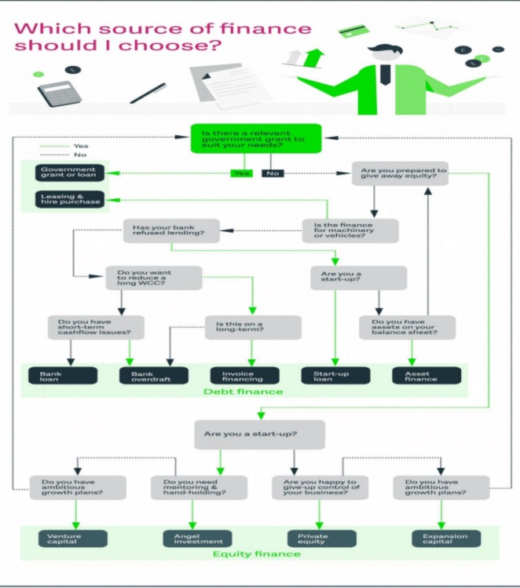

Debt, Equity and Grants are the commonest means for financing a business whether a start-up or growth stage enterprise. We look at what these terms means and their implications for Enterprise funding.
Debt financing- applies where you are borrowing money from an outside source and promising to pay it back with interest by a set date in the future.
Equity financing- applies where someone is putting money or assets into the business in exchange for some percentage of ownership or shareholding.
Grant funding- This is a fund given by an end entity, often a public body, charitable foundation, or a specialized grant-making institution to an individual or another entity (usually a non-profit organization, sometimes a business, Social enterprise or a local government body) for a specific purpose linked to public benefit. Unlike loans, or equity financing, grants are not to be paid back.
Each of the above instruments has its pros and cons or limitations depending on your funding needs.
Most Commonly, Debt and equity financing are ways that businesses acquire necessary funding. Which one you need depends on your business goals, tolerance for risk, and need for control. Many businesses in the startup stage will pursue Grant or equity financing, while those already established and those who have no problem with debt and possess a strong credit score might pursue traditional debt financing types like business loans. Enterprises in social projects such as climate adaptation, and unique innovations will attract Grant funding.
Debt financing is any type of loan that an enterprise uses to fund its business as part of the capital raising process. Essentially, when a business chooses to fund their working capital with a loan, it means they get their money from an outside source. This incurs a debt to the lender of those funds.
Some sources of debt financing are:
The ability to secure debt financing is largely based on your existing financials and creditworthiness.Loans can be either long or short term, based on the needs of your business.
Short-term debt financing applies to day-to-day operations - such as supplies, inventory management, and wages and are generally repaid in less than a year. The reason for choosing short-term debt finance varies from business to business, but it generally helps with temporary cash flow issues, which are common for startups.
Long term debt financing on the other hand, often applies to business assets such as land, equipment or buildings. Repayment of a long-term debt finance can be up to 10 years or more.
Advantages and disadvantages of debt financing
Most Commercial Banks, Microfinance Banks, SACCOswill provide debt of loan financing products at commercial or subsidized rates. Debt can be much cheaper when guaranteed under guarantee schemes.
Equity financing is the process of raising capital through the sale of shares. Enterprises raise money because they might have a short-term need to pay bills or have a long-term goal and require funds to invest in their growth. By selling shares, an enterprise is effectively selling ownership in their Business in return for funds.
Some sources of equity financing are:
Choosing which one works for you between Debt and Equity is dependent on several factors such as your current profitability, future profitability, reliance on ownership and control, and whether you can qualify for one or the other.
When deciding whether to seek debt or equity financing, businesses usually consider these three factors:
Securing equity financing can be a simpler process than debt financing, but you need to have an extremely attractive product or financial projections, as well as being able to surrender a portion of your Business and oftentimes a good amount of control.
While perhaps the best for start-ups and social impact projects, Grant funding has its pros and cons
Why should an enterprise go for Grant Funding?
The advantages and disadvantages of business grants point to the idea of free money for your business. If you are willing to invest time in your idea, go for it. The pros and cons of grants for business mean nothing if the belief in your idea is not solid.
Why Would an Enterprise Choose Debt Over Equity Financing?
A company would choose debt financing over equity financing if it does not want to surrender any part of its company. A company that believes in its financials would not want to miss on the profits they would have to pass to shareholders if they assigned someone else equity.
Is Debt Cheaper Than Equity?
This will depend on how well the business performs, debt can be cheaper than equity, but the opposite is also true. If your business is making no profit and is almost closing, then in essence your equity financing costs you nothing. If you take out a business loan via debt financing and you turn no profit, you still need to pay back the loan plus interest. In this scenario, debt financing costs more. However, if your company is selling well and making profits, the amount you pay shareholders could be much more than if you had kept that ownership and simply paid a loan. Each circumstance is different.
Is Debt Financing or Equity Financing Riskier?
Debt financing can be riskier if you are not profitable as there will be loan pressure from your lenders. However, equity financing can be risky if your investors expect you to turn a healthy profit, which they often do. If they are unhappy, they could try to negotiate for cheaper equity or divest altogether.
What is Venture Capital and how is it acquired?
Venture capital (VC) is a form of private equity and a type of financing that, investors usually provide to startup companies and existing small enterprises that are believed to have long-term growth potential. Venture capital generally comes from well-off investors, investment banks, and any other financial institutions. However, it does not always take a monetary form; it can also be provided in the form of technical or managerial expertise. Venture capital is typically allocated to small companies with exceptional growth potential, or to companies that have grown quickly and appear poised to continue to expand.
The first step for any business looking for venture capital is to submit a proposal with business plan, either to a venture capital/Private equity firm or to an angel investor. If interested in the proposal, the firm or the investor must then perform due diligence, which includes a thorough investigation of the company's business model, products, management, and operating history, among other things. VCs also look for opportunities in industries that they are familiar with, and the chance to own a large percentage of the company so that they can influence its direction.
Who is an angel investor?
An angel investor is usually a high-net-worth individual who funds startups at the early stages, often with their own money. Angel investors are also called informal investors, angel funders, private investors, seed investors or business angels. Angel investors are focused on helping startups take their first steps, rather than the possible profit they may get from the business
What advisers and other stakeholders are involved in the financing and investment process?
Depending on the complexity or magnitude of the transaction, advisers and stakeholders in the investment process include the following:
* Management and Business Advisor; for business modeling planning and Strategy advise.
* Legal Adviser; To ensure legal compliance is met in the process
* Tax advisers: Advice and due diligence on tax compliance and tax optimization.
* Auditors/accounting firms: To assess the financial statements and provide background on any financial aspects flagged during the due diligence phase.
* Specialist consultants: These may include environmental specialists, surveyors and similar industry specialists, depending on the nature of operations conducted by the enterprise.
* Regulators: If the target is in a regulated sector such as banking, insurance, agriculture or healthcare, regulatory liaison is critical.
What is required for Legal due diligence in raising finance?
For the purposes of legal due diligence, the finance seeker will usually be required to disclose the following:
* Corporate structure or ownership details;
* Existing commercial agreements (as per an agreed materiality threshold);
* Regulatory records and correspondence with relevant regulators;
* Details of property (eg, land and assets owned);
* Financial arrangements (eg, facilities, loans, securities issued to third parties);
* Management and employee details and records (including any union agreements);
* Litigation history, if any;
* Other corporate records, such as IP registrations and insurance;
*Environmental compliance, where necessary
The following decision tree elaborates how one can arrive at the best/suitable choice of funding.

Source Sage Article -https://www.sage.com/en-gb/blog/funding-for-manufacturing